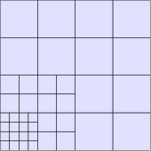

Locally refined heat equation
Introduction
This tutorial solves the same problem as the Heat equation tutorial —
\[-\nabla \cdot (\nabla u) = 1 \quad \textbf{x} \in \Omega,\]
on the unit square with $u = 0$ on $\partial\Omega$ — but on a locally refined patch instead of a uniformly refined one.
Only two things differ: the geometry is a hierarchical (THB-spline) patch, and the degrees of freedom are distributed over several SubDofHandlers instead of one, which gives the assembly loop one extra level of nesting. Boundary conditions, solving and export are unchanged. See the Hierarchical splines topic guide for why the subdomains are needed.
Commented program
using FerriteGismo, SparseArrays, LinearAlgebraA locally refined geometry
We start from an ordinary quadratic B-spline square and lift it with THBSpline. The lift changes nothing geometrically; it makes the patch refinable element by element.
geometry = createBSplineSquare(1.0)degreeElevate!(geometry) # quadraticuniformRefine!(geometry, 3) # 4x4 coarse elementspatch = THBSpline{2}(geometry)TinyGismo.THBSplineAllocated{2}(Ptr{Nothing}(0x000000001ef9e6e0))Now refine towards the lower-left corner, one level at a time. A RefinementBox names the level a region is refined to, with corners indexed on that level's grid, so each box below covers a quarter of the previous one.
refineElements!(patch, RefinementBox(2, 1:4, 1:4))refineElements!(patch, RefinementBox(3, 1:4, 1:4))grid = IGAGrid{2}(patch)getncells(grid)40The graded mesh, drawn with FerriteTikz.jl:
using FerriteTikztikzgrid(parameterSpaceGrid(grid); cellcolor = "blue!12", picturescale = 6.0)
Subdomains and degrees of freedom
The number of basis functions acting on an element is not constant here, so one interpolation cannot describe the whole grid. hierarchicalSubdomains groups the cells by active-function count and returns an interpolation per group; each becomes one SubDofHandler.
groups = hierarchicalSubdomains(grid)[(getnbasefunctions(ip), length(cells)) for (cells, ip) in groups]3-element Vector{Tuple{Int64, Int64}}:
(9, 26)
(10, 4)
(12, 10)dh = IGADofHandler(grid)for (cells, ip) in groups sdh = SubDofHandler(dh, cells) add!(sdh, :u, ip)endclose!(dh)ndofs(dh)60The dofs are numbered globally over the control points, so the grouping is invisible to the linear system — it only tells the assembly loop how large each element matrix is.
Boundary conditions
Unchanged: constraints are expressed on control points, which belong to the patch rather than to any subdomain.
ch = ConstraintHandler(dh)for side in (:left, :right, :bottom, :top) fixEdge!(dh, ch, side, :u)endclose!(ch)Assembly
The element routine is exactly the one from the heat equation tutorial.
function assemble_element!(Ke::Matrix, fe::Vector, cellvalues::CellValues) n_basefuncs = getnbasefunctions(cellvalues) fill!(Ke, 0) fill!(fe, 0) for q_point in 1:getnquadpoints(cellvalues) dΩ = getdetJdV(cellvalues, q_point) for i in 1:n_basefuncs δu = shape_value(cellvalues, q_point, i) ∇δu = shape_gradient(cellvalues, q_point, i) fe[i] += δu * dΩ for j in 1:n_basefuncs ∇u = shape_gradient(cellvalues, q_point, j) Ke[i, j] += (∇δu ⋅ ∇u) * dΩ end end end return Ke, feendThe global loop is where the one structural difference shows up: it iterates the subdomains, building a CellValues for each, since each has its own number of shape functions. A tensor patch has a single subdomain, reducing this to the usual loop.
function assemble_global(dh::IGADofHandler, qr::QuadratureRule) K = allocate_matrix(dh) f = zeros(ndofs(dh)) assembler = start_assemble(K, f) for sdh in dh.subdofhandlers ip = only(sdh.field_interpolations) cellvalues = CellValues(qr, ip, ip^2) n_basefuncs = getnbasefunctions(ip) Ke = zeros(n_basefuncs, n_basefuncs) fe = zeros(n_basefuncs) for cell in CellIterator(sdh) reinit!(cellvalues, cell) assemble_element!(Ke, fe, cellvalues) assemble!(assembler, celldofs(cell), Ke, fe) end end return K, fendK, f = assemble_global(dh, QuadratureRule{RefQuadrilateral}(3))Two identities are worth checking, since they fail loudly if either the shape functions or the dof bookkeeping across subdomains is wrong. Constants are in the kernel of the Laplacian:
norm(K * ones(ndofs(dh)))1.3601922555210873e-15and the load vector of $f \equiv 1$ sums to the area of the domain, since the basis is a partition of unity:
sum(f)1.0000000000000002Solution of the system
apply!(K, f, ch)u = K \ fmaximum(u)0.0739214552371053The exact centre value of this problem is $0.0736713\ldots$:
FerriteGismo.interpolate(FerriteGismo._fieldInterpolation(dh, :u), u, [0.5, 0.5])0.07382434974538238Within a fraction of a percent, on a mesh refined entirely in one corner while the centre still sits on a coarse level. Local refinement pays off where it is placed, so a practical scheme drives that choice from a per-element error indicator rather than a fixed box.
Postprocessing
Export is unchanged. The export mesh is built element by element here, so the file contains the graded mesh rather than a uniform lattice over it.
VTKGridFile("hierarchical_heat_equation", dh) do vtk write_solution(vtk, dh, u)end